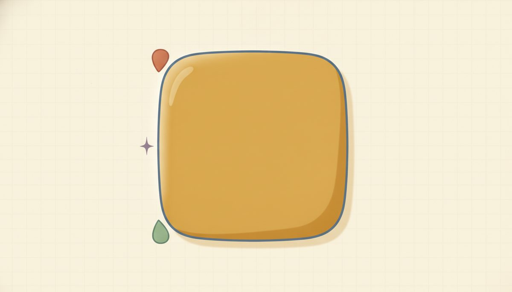
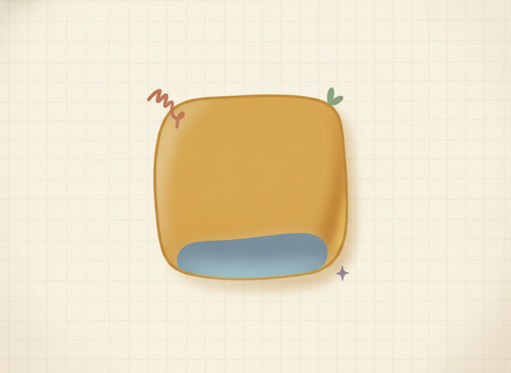

Square roots & simplifying radicals

Here's a picture to start from. A square has area 9. What's the length of one side? You're looking for a number that, multiplied by itself, gives 9. That's 3, because 3 × 3 = 9. Squaring a number asks "what's the area of a square with this side?" The square root asks the reverse: "the area is 9, so what's the side?" That reverse question is the idea of this lesson, and it's the exact tool you'll need later to undo an x². Without it, the answer to x² = 7 would have no name to write down.

Squaring and taking a square root undo each other, the same way the 2 power and the root sit on opposite sides of the move. So √9 = 3 because 3² = 9, and √25 = 5 because 5² = 25. When the number under the root is a perfect square, meaning some whole number squared, the root comes out as a tidy whole number.
But not every number is that friendly. √9 is a clean 3, yet √7 is irrational: its decimal runs on forever without ever repeating, so no fraction lands exactly on it. That doesn't make √7 unfinished or wrong. √7 is the exact answer, the same way 1/3 is exact even though its decimal never stops.
A whole number system holds numbers like these, fractions, and the radicals alongside the plain whole numbers. Reach for a rounded decimal like 2.6457 only when a problem actually asks for one. Otherwise the radical is the finished, honest answer.
When a radical isn't a perfect square, you can often make it simpler without rounding it at all. The move is to split the number under the root into a perfect-square factor times whatever is left. The perfect square can then step outside the root:
$$\sqrt{12}=\sqrt{4\cdot 3}=\sqrt4\,\sqrt3=2\sqrt3$$
Read that left to right: 12 is 4 times 3, the √4 becomes a plain 2 out front, and the √3 stays behind because 3 has no perfect-square factor to give up. One tip that saves steps: hunt for the largest perfect-square factor. If you pull out 4 from √72 you get 2√18 and you're not done. Pull out 36 and you land on 6√2 in one step. Either route reaches the same place. Pulling the largest just gets there fastest.
Read each worked example slowly, one line at a time, and ask why each line follows from the one above before you go on. That's what makes a worked example teach.
New words
- 12.1.d1 Square root (√( )): the inverse of squaring. √9=3 because 3²=9. The symbol gives the principal (non-negative) root: √9 is 3, not -3. (We restore the second sign by hand in 12.2 with ±.)
- 12.1.d2 Radical / radicand: the √( ) is the radical; the number under it is the radicand.
- 12.1.d3 Perfect square: a number that's some integer squared, like 1,4,9,16,25,36,49,...
- 12.1.d4 Simplified radical: no perfect-square factor left under the root. √12=√(4·3)=2√3 is simplified; √12 is not.
- 12.1.d5 Like radicals: radicals with the same radicand (2√3 and 4√3). They add like the "boxes" of like terms: 2 of a thing plus 4 of the same thing is 6 of it.
Worked example
- 12.1.w1 √50=√(25·2)=√25 √2=5√2. Here 50 is 25 times 2, and 25 is the largest perfect square hiding inside, so the √25 steps out as 5 and the √2 stays.
- 12.1.w2 √18=√(9·2)=3√2. The perfect square is what comes out: 9 becomes a 3 in front. So write the split as 9·2, not 2·9, to keep the square in plain view.
- 12.1.w3 Add like radicals: 2√3+4√3=6√3. Same radicand, so add the counts, exactly like 2x+4x=6x. (You cannot combine 2√3+4√2; unlike radicals, like unlike terms.)
- 12.1.w4 Multiply radicals: √2·√3=√(2·3)=√6. And √5·√5=√25=5 (a root times itself undoes the square).
- 12.1.w5 Rationalize a denominator (lightly): a radical in the denominator is usually rewritten without one. Multiply top and bottom by √2: $$\frac{1}{\sqrt2}=\frac{1}{\sqrt2}\cdot\frac{\sqrt2}{\sqrt2}=\frac{\sqrt2}{2}.$$ This "multiply by the radical over itself" trick is for a single radical in the denominator. Denominators like 2+√3 come later (Intermediate Algebra) and use a different move (the conjugate), so don't over-generalize this one.
One more, one power up, so you've seen it: a cube root undoes cubing. ∛27 = 3 because 3³ = 27. Same idea, just the 3 power instead of the 2.
Here's a clean case to get the method moving before the practice mixes things up. Simplify √20. It's 4 times 5, and 4 is a perfect square, so √20 = √(4·5) = 2√5. One factor out, one left behind. That's the whole move.
Two slips are worth naming now that you've done a few correctly. The first: treating √7 as a mistake and reaching for 2.6457. It isn't a mistake. It's the exact number, in the same family as 1/3, whose decimal also never stops. The cure is to leave the radical alone unless a decimal is asked for.
The second: stopping before the radical is fully simplified, like writing √72 = 2√18 and walking away. There's still a perfect square (9) hiding under that √18. A quick self-check after any simplify: ask "is there still a perfect-square factor inside?" If yes, keep pulling: √72 = 2√18 = 2·3√2 = 6√2, until none is left. (One radicand won't combine with a different one, by the way: √2 + √3 isn't √5, the same reason 2x + 3y won't fold into one term.)
Check yourself
- 12.1.c1 Simplify √45, and say how you knew which factor to pull out. (√45 = √(9·5) = 3√5; you look for the largest perfect-square factor, and 9 is a perfect square that divides 45 while 5 has none left to give.)
- 12.1.c2 Is √10 a "finished" answer? Say how it's like 1/3 and unlike √9. (Yes, it's finished. √10 is irrational, an exact number whose decimal never settles, just like 1/3 is exact even though its decimal repeats forever. It's unlike √9, which lands on the whole number 3.)
- 12.1.c3 Why can you combine 5√2 + 3√2 but not 5√2 + 3√3? (The first pair shares the radicand √2, so you add the counts to get 8√2, like 5x + 3x. The second pair has different radicands, so there's nothing matching to add, just as 5x + 3y stays apart.)
You can now read √( ) as the side of a square with a given area, simplify a radical by pulling out its largest perfect-square factor, add radicals that share a radicand, and treat an irrational root as the exact answer it is.
Mixed practice feels harder than repeating one kind of problem, and that's the point. It's what makes a skill last to next week. Every problem below has its answer at the end of the lesson, and if one stalls you, flip back to the worked example it's based on. That's what it's there for.
Evaluate (perfect squares & cube root):
Reveal answerHide to problem 1
4Reveal answerHide to problem 2
7Reveal answerHide to problem 3
10Reveal answerHide to problem 4
3Simplify:
Reveal answerHide to problem 5
√(4·2)=2√2Reveal answerHide to problem 6
√(4·5)=2√5Reveal answerHide to problem 7
√(9·5)=3√5Reveal answerHide to problem 8
√(36·2)=6√2Reveal answerHide to problem 9
√(16·3)=4√3Reveal answerHide to problem 10
√(25·3)=5√3Add / multiply / rationalize:
Reveal answerHide to problem 11
4√5Reveal answerHide to problem 12
√16=4Locate between two consecutive integers (keep the exact radical):